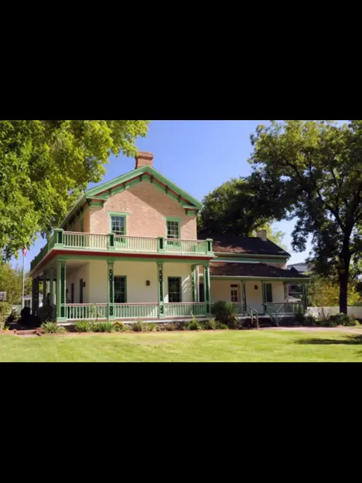
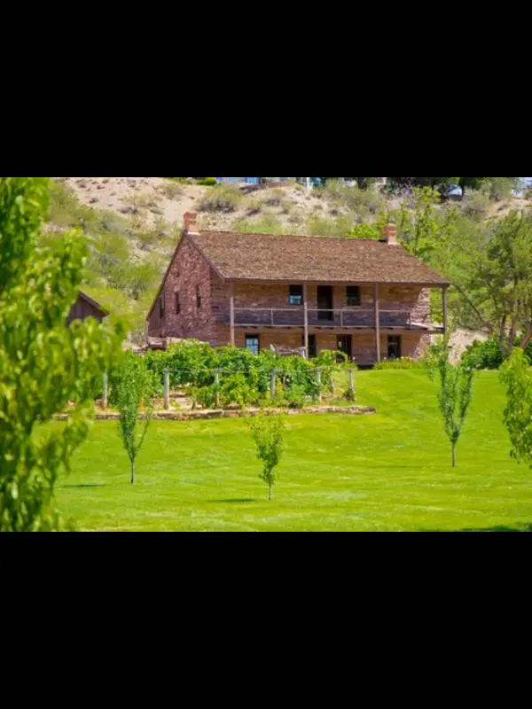

The Saint George Temple and Visitors center is an amazing place to visit, learn about the marvelous history of this temple and more at the Visitors center!!!The Saint George Tabernacle is one of the oldest buildings in Saint George, it was a gathering place for members of the Church of Jesus Christ of Latter-day Saints. If you want to learn more about the history of the church or the history of this building, it is an amazing place to visit.Opened in 1911, Judds has served the people of Saint George for over 100 years, selling many old retro drinks, ice cream, candies and more. If you happen to be in Downtown Saint George, Judd's is a place that should not be missed.

This home belonged to a man named Brigham Young. Brigham Young was the second president of the LDS church.

Want to learn more about church history? Check out the Jacob Hamblin Home and learn about the amazing works of Jacob Hamblin.Snow Canyon is one of the best places to go. If you like hiking, this is definitely the place to be.